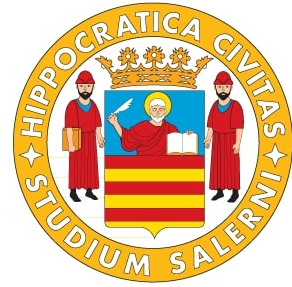
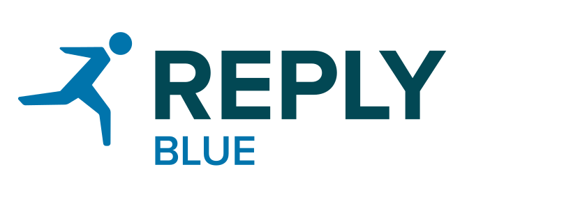
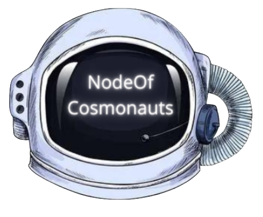
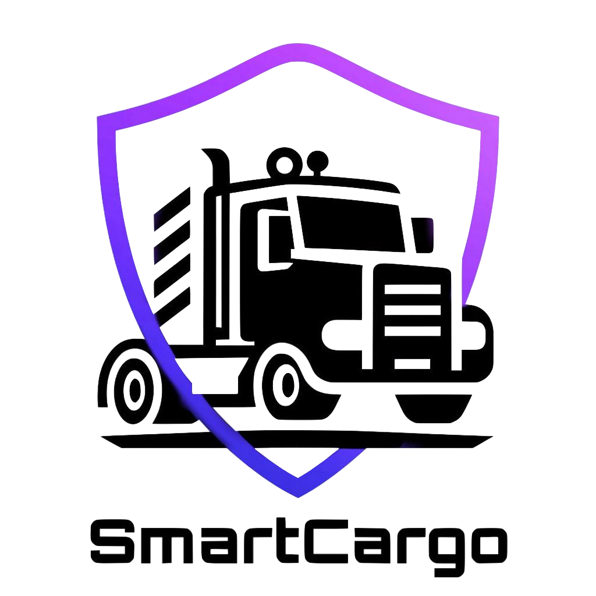
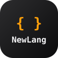

Ruolo attuale
Funzionario Tecnico
Università degli Studi di Salerno
Software Engineer · Cybersecurity Specialist
Funzionario Tecnico, Università degli Studi di Salerno

La mia storia
Ingegnere del software specializzato in cybersecurity, con esperienza nello sviluppo backend a microservizi e nel testing di sistemi distribuiti e blockchain. Oggi mi occupo di infrastrutture tecniche e formazione in cybersecurity all'Università degli Studi di Salerno.
Ruolo attuale
Università degli Studi di Salerno
Formazione
Laurea Magistrale con lode in Software Engineering and IT Management.
Certificazioni Google
Specializzazione
Penetration testing, ethical hacking e vulnerability assessment. Docente in un'Academy universitaria di cybersecurity.
Interessi
Co-fondatore di NodeOf Cosmonauts, validator nell'ecosistema Cosmos.
Il mio percorso

set 2025 — oggi
Università degli Studi di Salerno
Gestione delle infrastrutture informatiche e robotiche del laboratorio MIVIA AIIR e supporto tecnico alla didattica e alla ricerca: ambienti di simulazione, server di calcolo e laboratori di penetration testing.
apr 2026 — lug 2026
Università degli Studi di Salerno
Docente a contratto nell'Academy in Cybersecurity del Corso di Laurea in Ingegneria Informatica. Progettazione ed erogazione di un percorso teorico-pratico su penetration testing, ethical hacking e vulnerability assessment.

ott 2024 — ago 2025
Blue Reply · Milano
Sviluppo backend di microservizi Java/Spring Boot per clienti del settore assicurativo. CI/CD multi-ambiente, quality gate con SonarQube e NexusIQ, test JUnit e Mockito con coverage superiore all'85%.
apr 2024 — ott 2024
NTT DATA Italia · Napoli
Tesi magistrale sulle metodologie di testing per l'individuazione di vulnerabilità nei sistemi blockchain. Sviluppo di suite di test automatizzati integrate in pipeline CI/CD.

gen 2022 — dic 2024
NodeOf Cosmonauts
Gestione di nodi validatori nell'ecosistema Cosmos: configurazione, hardening e monitoraggio su Linux, in cloud e on-premise. Responsabile del sito web e della comunicazione del progetto.
set 2021 — dic 2021
Ericsson · Pagani
Tesi triennale: rete neurale in Python per il riconoscimento dei percorsi autorizzati in area portuale da dati geospaziali, con clustering DBSCAN e K-Means.
I miei studi
2022 — 2024
Software Engineering and IT Management
Università degli Studi di Salerno
Tesi: metodologie di testing per l'individuazione di vulnerabilità nei sistemi blockchain, in collaborazione con NTT DATA.
2018 — 2022
Scienze e Tecnologie Informatiche
Università degli Studi di Salerno
Tesi: rete neurale per il riconoscimento dei percorsi autorizzati in area portuale, in collaborazione con Ericsson.
2013 — 2018
Informatica
ITIS “G. Marconi”
Cosa ho costruito
Progetti accademici di ingegneria del software, compilatori e gestione dei dati.

Web · Python · Project Management
Web app a supporto del Porto di Valencia. Progetto dei corsi di Ingegneria del Software e Gestione dei Progetti Software.

Compilatori · Java
Compilatore per il linguaggio NewLang: analisi sintattica e semantica, scoping e traduzione in C.
Database NoSQL
Modellazione e interrogazione di dati su database NoSQL.
Con chi ho collaborato
Landing page per la vendita di prodotti NFC dedicati alle recensioni Google.
Visita il sitoSito web aziendale.
Visita il sitoCo-fondatore. Validator nell'ecosistema Cosmos, con archivio BitCanna e faucet Comdex.
Visita il sitoSito vetrina per una wedding & event planner.
Visita il sitoCosa so fare
Google · Coursera
Conseguita a luglio 2026
Vedi il certificato ↗
Completato: Foundations of Cybersecurity
In corso
In corso
Altre certificazioni: Web 3.0 · Cybersecurity
Scrivimi
Disponibile per progetti, collaborazioni e consulenze in ambito software e cybersecurity.